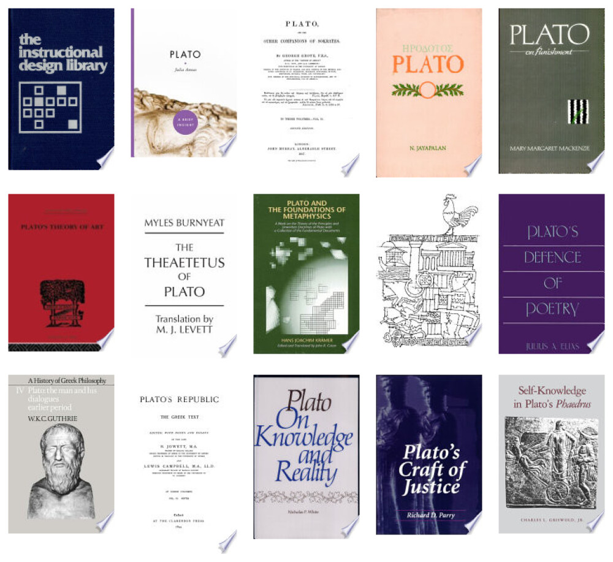

library(tidyverse)
library(jsonlite)
library(imager)
library(httr)5 Импорт: JSON
5.1 Формат JSON
Формат JSON (JavaScript Object Notation) предназначен для представления структурированных данных. JSON имеет шесть основных типов данных. Четыре из них - скаляры:
- cамый простой тип -
null, который играет ту же роль, что иNAв R. Он представляет собой отсутствие данных; - cтрока (string) похожа на строку в R, но в ней всегда должны использоваться двойные кавычки;
- число аналогично числам в R, при этом поддерживается целочисленная (например, 123), десятичная (например, 123.45) или научная (например, 1,23e3) нотация. JSON не поддерживает
Inf,-InfилиNaN; - логическое значение аналогично
TRUEиFALSEв R, но использует строчные буквыtrueиfalse.
Строки, числа и булевы значения в JSON очень похожи на символьные, числовые и логические векторы в R. Основное отличие заключается в том, что скаляры JSON могут представлять только одно значение. Для представления нескольких значений необходимо использовать один из двух оставшихся типов: массивы и объекты.
И массивы, и объекты похожи на списки в R, разница заключается в том, именованы они или нет. Массив подобен безымянному списку и записывается через []. Например, [1, 2, 3] - это массив, содержащий 3 числа, а [null, 1, "string", false] - массив, содержащий ноль, число, строку и булево значение.
Объект подобен именованному списку и записывается через {}. Имена (ключи в терминологии JSON) являются строками, поэтому должны быть заключены в кавычки. Например, {“x”: 1, “y”: 2} - это объект, который сопоставляет x с 1, а y – с 2.
5.2 От JSON к таблице
Загрузим небольшой файл TBBT.json, хранящий данные о сериале “Теория большого взрыва” (источник). Скачать лучше из репозитория курса ссылка.
path <- "../files/TBBT.json"
tbbt <- read_json(path)Функция read_json() вернула нам список со следующими элементами:
summary(tbbt) Length Class Mode
name 1 -none- character
season_count 1 -none- character
episodes_count_total 1 -none- character
episodes_count_per_season 12 -none- list
casting 11 -none- list
episode_list 280 -none- list
references 1 -none- list Выборочно преобразуем список в тиббл, используя функцию pluck() из пакета {purrr}.
episodes_count <- tibble(
season = tbbt |>
pluck("episodes_count_per_season") |>
names(),
n = tbbt |>
pluck("episodes_count_per_season") |>
as.integer()
)
episodes_count |>
print()# A tibble: 12 × 2
season n
<chr> <int>
1 S01 17
2 S02 23
3 S03 23
4 S04 24
5 S05 24
6 S06 24
7 S07 24
8 S08 24
9 S09 24
10 S10 24
11 S11 24
12 S12 25tbbt |>
pluck("casting") |>
map_dfr(as_tibble) |>
print()# A tibble: 11 × 3
character_name actor_name first_appearance
<chr> <chr> <chr>
1 Sheldon Cooper Jim Parsons S01E01
2 Leonard Hofstadter Johnny Galecki S01E01
3 Penny Kaley Cuoco S01E01
4 Raj Kooththirapll Kunal Nayyar S01E01
5 Howard Wolowitz Simon Helberg S01E01
6 Bernadette Rostenkowski Melissa Rauch S03E05
7 Amy Farrah Fowler Mayim Bialik S03E23
8 Stuart Bloom Kevin Sussman <NA>
9 Wil Wheaton Wil Wheaton <NA>
10 Barry Kripke John Ross Bowie <NA>
11 Zack <NA> <NA> Еще один способ.
tibble(
episode_id = map_chr(tbbt$episode_list, pluck, "episode_id"),
title = map_chr(tbbt$episode_list, pluck, "title")) |>
print()# A tibble: 280 × 2
episode_id title
<chr> <chr>
1 S01E01 Pilot
2 S01E02 The Big Bran Hypothesis
3 S01E03 The Fuzzy Boots Corollary
4 S01E04 The Luminous Fish Effect
5 S01E05 The Hamburger Postulate
6 S01E06 The Middle-Earth Paradigm
7 S01E07 The Dumpling Paradox
8 S01E08 The Grasshopper Experiment
9 S01E09 The Cooper-Hofstadter Polarization
10 S01E10 The Loobenfeld Decay
# ℹ 270 more rows
5.3 Кейс: Шедевры Пушкинского музея
JSON – популярный формат для публикации открытых данных. В таком виде часто публикуют данные органы государственной власти, культурные и некоммерческие организации и др. Например, Пушкинский музей.
Взглянем на датасет “Шедевры из коллекции музея”. JSON можно прочитать напрямую из Сети.
doc <- read_json("https://pushkinmuseum.art/json/masterpieces.json")Датасет содержит информацию о 97 единицах хранения.
names(doc) [1] "3687" "3675" "3706" "3708" "3713" "3716" "4005" "4011" "4014"
[10] "4023" "4030" "4131" "4147" "4149" "4161" "4163" "4178" "4180"
[19] "4191" "4193" "4198" "4209" "4244" "4255" "4260" "4262" "4266"
[28] "4291" "4325" "4338" "4350" "4421" "4450" "4518" "4543" "4641"
[37] "4711" "4724" "4767" "7563" "4782" "4783" "4788" "4844" "4906"
[46] "4932" "4936" "4941" "4949" "4950" "5238" "5239" "5297" "5347"
[55] "5591" "5798" "5910" "5913" "5992" "6187" "6226" "6564" "6584"
[64] "6586" "6629" "6632" "6886" "7034" "7151" "7457" "7468" "7564"
[73] "7565" "7566" "7567" "7568" "7569" "7570" "9464" "9415" "9046"
[82] "10253" "10284" "10266" "10277" "10282" "10278" "10279" "10280" "10281"
[91] "10285" "10286" "10287" "10288" "10289" "10290" "10291"Для каждого предмета дано подробное описание.
summary(doc[[1]]) Length Class Mode
path 1 -none- character
m_parent_id 1 -none- character
year 1 -none- numeric
get_year 1 -none- character
inv_num 1 -none- character
type 2 -none- list
country 2 -none- list
period 2 -none- list
paint_school 1 -none- character
graphics_type 1 -none- character
department 1 -none- character
masterpiece 1 -none- character
show_in_hall 1 -none- character
show_in_collection 1 -none- numeric
name 2 -none- list
namecom 2 -none- list
size 2 -none- list
text 2 -none- list
annotation 2 -none- list
litra 2 -none- list
restor 2 -none- list
audioguide 2 -none- list
videoguide 2 -none- list
link 2 -none- list
linktext 2 -none- list
producein 2 -none- list
material 2 -none- list
from 2 -none- list
matvos 2 -none- list
sizevos 2 -none- list
prodcast 2 -none- list
searcha 2 -none- list
seakeys 2 -none- list
hall 1 -none- character
building 1 -none- character
gallery 1 -none- list
authors 1 -none- character
collectors 1 -none- list
cast 1 -none- character
shop 1 -none- characterЗаберем только то, что нам интересно.
masterpieces <- tibble(
name = map_chr(doc, pluck, "name", "ru"),
get_year = map_chr(doc, pluck, "get_year"),
year = map_int(doc, pluck, "year"),
period = map_chr(doc, pluck, "period", "name", "ru"),
country = map_chr(doc, pluck, "country", "ru"),
gallery = paste0("https://pushkinmuseum.art", map_chr(doc, pluck, "gallery", 1, 1)))Библиотека imager позволяет работать с изображениями из датасета. Вот так мы могли бы забрать одно из них.
img <- load.image(masterpieces$gallery[1]) |>
plot()
img
В пакете imager есть функция map_il(), которая похожа на свою родню из {purrr}, но возвращает список изображений.
img_gallery <- map_il(masterpieces$gallery, ~load.image(.x))Функция walk() из пакета purrr – это аналог map() для тех случаев, когда нас интересует только вывод, т.е.не надо ничего сохранять в окружение.
par(mfrow = c(10, 10), mar = rep(0,4))
walk(img_gallery, plot, axes = FALSE)
5.4 Кейс: Нобелевские лауреаты
Мы заберем данные о нобелевских лауреатах по литературе. В данном случае API не требует ключа авторизации.
# Базовый URL API Нобелевской премии
base_url <- "https://api.nobelprize.org/2.1/laureates"# Параметры запроса (фильтрация и ограничение результатов)
query_params <- list(
nobelPrizeCategory = "lit", # Фильтр по категории
limit = 100 # Ограничение количества результатов
)Другие категории:
- phy (физика),
- che (химия),
- med (медицина),
- lit (литература),
- pea (мир),
- eco (экономика).
# Выполнение GET-запроса
response <- GET(url = base_url, query = query_params)Функция content() берет сырой ответ от API и возвращает готовые к анализу данные.
nobel_data <- content(response, "text")laureates_data <- fromJSON(nobel_data) Нам осталось преобразовать данные в таблицу.
laureates_tbl <- laureates_data |>
pluck("laureates") laureates_tbl |>
unnest_wider(knownName, names_sep = "_") |>
select(-fullName, -givenName, -knownName_se, -familyName, -fileName) |>
unnest_wider(birth, names_sep = "_") И так далее. Пример исследования, выполненного по итогам этого курса, можно посмотреть по ссылке.
5.5 Кейс: Google Books
Подробные инструкции для разработчиков. Значение maxResults не может превышать 40 за один запрос, в день не более 1000.
search_google_books <- function(query, max_results = 15, start_index = 0) {
base_url <- "https://www.googleapis.com/books/v1/volumes"
# Ограничиваем max_results 40
if (max_results > 40) {
warning("max_results не может быть больше 40. Установлено 40.")
max_results <- 40
}
full_url <- paste0(
base_url,
"?q=", URLencode(query),
"&maxResults=", max_results,
"&startIndex=", start_index,
"&printType=books"
)
response <- GET(full_url)
if (status_code(response) != 200) {
stop("Ошибка при запросе к API Google Books")
}
content <- content(response, "text", encoding = "UTF-8")
data <- fromJSON(content)
return(data)
}Попробуем в действии.
res <- search_google_books('plato')# Извлекаем метаданные
plato_data <- res$items$volumeInfo |>
mutate(authors = map_chr(authors, ~paste(.x, collapse = ", "))) |>
select(-industryIdentifiers, -readingModes, -printType, -maturityRating, -allowAnonLogging, -contentVersion, -panelizationSummary) |>
unnest_wider(imageLinks, names_sep = "_")
plato_data |>
print() # A tibble: 15 × 16
title authors publisher publishedDate pageCount categories
<chr> <chr> <chr> <chr> <int> <list>
1 PLATO Harold… Educatio… 1980 120 <chr [1]>
2 Plato Julia … Sterling… 2009 192 <chr [1]>
3 Plato George… <NA> 1867 656 <chr [1]>
4 Plato N. Jay… Atlantic… 1999 116 <NULL>
5 Plato on Punishment Mary M… Univ of … 1985-01-01 292 <chr [1]>
6 Plato's Theory of Art Rupert… Psycholo… 1953 336 <chr [1]>
7 The Theaetetus of Plato Myles … Hackett … 1990-01-01 376 <chr [1]>
8 Plato and the Foundatio… Hans J… SUNY Pre… 1990-01-01 354 <chr [1]>
9 Plato's Republic, Books… Plato Agora Pu… 2001 414 <chr [1]>
10 Plato's Defence of Poet… Julius… SUNY Pre… 1984-01-01 280 <chr [1]>
11 A History of Greek Phil… W. K. … Cambridg… 1986-04-24 626 <chr [1]>
12 Plato's Republic Platón <NA> 1894 532 <NULL>
13 Plato on Knowledge and … Nichol… Hackett … 1976-01-01 276 <chr [1]>
14 Plato's Craft of Justice Richar… SUNY Pre… 1996-01-01 288 <chr [1]>
15 Self-Knowledge in Plato… Charle… Penn Sta… 2010-11-01 337 <chr [1]>
# ℹ 10 more variables: imageLinks_smallThumbnail <chr>,
# imageLinks_thumbnail <chr>, language <chr>, previewLink <chr>,
# infoLink <chr>, canonicalVolumeLink <chr>, description <chr>,
# subtitle <chr>, averageRating <int>, ratingsCount <int>Создадим галерею обложек.
library(magick)
catch_cover <- function(url) {
img <- image_read(url) |>
image_border("white", "10x10") # Добавляем рамку
return(img)
}
plato_gallery <- map(plato_data$imageLinks_smallThumbnail, catch_cover)Функция для создания сетки обложек.
# Функция для создания сетки обложек
create_cover_grid <- function(images, cols = 4, target_width = 200) {
if (length(images) == 0) return(NULL)
# Ресайзим все изображения к одинаковой ширине
images_resized <- map(images, ~ image_scale(.x, paste0(target_width, "x")))
# Вычисляем количество строк
rows <- ceiling(length(images_resized) / cols)
# Создаем строки
gallery_rows <- map(1:rows, function(row) {
start_idx <- (row - 1) * cols + 1
end_idx <- min(row * cols, length(images_resized))
row_images <- images_resized[start_idx:end_idx]
# Если в последней строке меньше изображений, добавляем пустые места
if (length(row_images) < cols) {
empty_count <- cols - length(row_images)
empty_images <- map(1:empty_count, ~ image_blank(target_width, 300, "white"))
row_images <- c(row_images, empty_images)
}
# Объединяем изображения в строку
image_append(do.call(c, row_images), stack = FALSE)
})
# Объединяем все строки
image_append(do.call(c, gallery_rows), stack = TRUE)
}# Создаем и отображаем галерею
gallery <- create_cover_grid(plato_gallery, cols = 5)
print(gallery)
При работе важно учитывать лимиты API и контролировать частоту запросов через Sys.sleep (чтобы избежать блокировки).
Пример решения.
# Новая функция для массовой загрузки книг с подтверждением
search_multiple_books <- function(query, total_results = 50, results_per_request = 15, ask_confirmation = TRUE) {
# Сначала делаем пробный запрос чтобы узнать общее количество книг
message("🔍 Ищу книги по запросу: '", query, "'")
initial_data <- search_google_books(query, max_results = 1, start_index = 0)
total_available <- initial_data$totalItems
message("📚 Найдено всего книг: ", total_available)
# Если книг нет, сразу возвращаем пустой результат
if (total_available == 0) {
message("❌ По вашему запросу ничего не найдено")
return(list(
kind = "books#volumes",
totalItems = 0,
items = list()
))
}
# Ограничиваем запрашиваемое количество доступным
actual_results <- min(total_results, total_available)
# Если включено подтверждение, спрашиваем пользователя
if (ask_confirmation) {
if (actual_results < total_results) {
message("ℹ️ Доступно только ", actual_results, " книг из запрошенных ", total_results)
}
message("📥 Вы можете загрузить ", actual_results, " книг")
response <- readline(prompt = "Продолжить загрузку? (y/n): ")
if (!tolower(response) %in% c("y", "yes", "д", "да")) {
message("⏹️ Загрузка отменена пользователем")
return(list(
kind = "books#volumes",
totalItems = 0,
items = list()
))
}
}
message("⏳ Загружаю ", actual_results, " книг...")
# Продолжаем с загрузкой
all_items <- list()
num_requests <- ceiling(actual_results / results_per_request)
for (i in seq_len(num_requests)) {
start_index <- (i - 1) * results_per_request
current_max <- min(results_per_request, actual_results - start_index)
if (current_max <= 0) break
message("📦 Загрузка партии ", i, " из ", num_requests, " (книги ", start_index + 1, "-", start_index + current_max, ")")
response_data <- search_google_books(
query = query,
max_results = current_max,
start_index = start_index
)
# Добавляем элементы в общий список
if (!is.null(response_data$items)) {
all_items <- c(all_items, response_data$items)
message("✅ Загружено книг в этой партии: ", length(response_data$items))
} else {
message("⚠️ В этой партии книги не найдены")
}
# Проверяем, достигнут ли лимит результатов
if (length(all_items) >= actual_results) {
break
}
# Задержка между запросами чтобы избежать блокировки
Sys.sleep(0.5)
}
message("🎉 Загрузка завершена! Всего загружено книг: ", length(all_items))
# Создаем структуру ответа аналогичную оригинальному API
list(
kind = "books#volumes",
totalItems = length(all_items),
items = all_items
)
}Пример вызова и ответа функции.
# С подтверждением (по умолчанию)
result <- search_multiple_books("Достоевский", total_results = 100)
# 🔍 Ищу книги по запросу: 'Достоевский'
# 📚 Найдено всего книг: 1000000
# 📥 Вы можете загрузить 100 книг